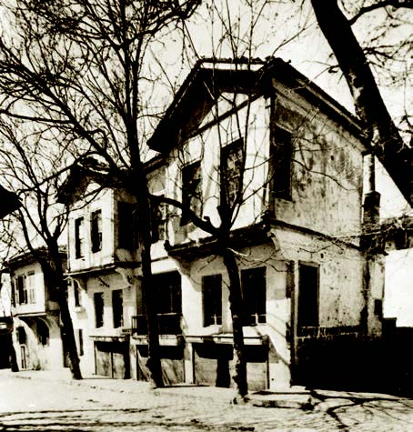

ATATÜRK' ÜN HAYATI
Mustafa Kemal Atatürk, 1881 yılında Selânik'te Kocakasım Mahallesi, Islâhhâne Caddesi'ndeki üç katlı pembe evde doğdu.

Mustafa Kemal Atatürk'ün doğduğu ev, Selanik
Babası Ali Rıza Efendi, annesi Zübeyde Hanım'dır. Baba tarafından dedesi Hafız Ahmet Efendi, 14-15. yüzyıllarda Konya ve Aydın'dan Makedonya'ya yerleştirilmiş Kocacık Yörüklerindendir. Annesi Zübeyde Hanım ise Selânik yakınlarındaki Langaza kasabasına yerleşmiş eski bir Türk ailesinin kızıdır. Ali Rıza Efendi, 1871 yılında Zübeyde Hanım'la evlendi. Atatürk'ün beş kardeşinden dördü küçük yaşlarda öldü, sadece Makbule (Atadan) Hanım 1956 yılına değin yaşadı.

Annesi Zübeyde Hanım
Küçük Mustafa, öğrenim çağına gelince annesinin arzusu üzerine Hafız Mehmet Efendi'nin mahalle mektebinde ilköğrenimine başladı. Kısa bir süre sonra babasının isteğiyle devrinin şartlarına göre modern eğitim veren Şemsi Efendi Mektebine geçti. Bu sırada babasını kaybetti. Bir süre Rapla Çiftliği'nde dayısının yanında kaldıktan sonra Selânik'e dönüp okulunu bitirdi. Selânik Mülkiye Rüştiyesine kaydoldu ve kısa bir süre sonra, 1893 yılında, Selanik Askerî Rüştiyesine girdi. Çok sevdiği matematik dersinin öğretmeni Yüzbaşı Mustafa Efendi’den, “Kemal” adını aldı. Böylece adı “Mustafa Kemal” oldu. Selanik Askerî Rüştiyesini bitirdikten sonra 1896 yılında Manastır Askerî İdadisine başladı. Edebiyata olan ilgisi, onda gelecekteki hitabet ve yazılı anlatım ustalığının temelini oluşturdu. Manastır Askerî İdadisindeki tarih öğretmeni Kolağası Mehmet Tevfik Bey, Mustafa Kemal’in tarihe ve özellikle Türk tarihine ilgi duymasında başlıca etken oldu.1896-1899 yıllarında Manastır Askeri İdadisini bitirip, İstanbul’da Harp Okulu’nun piyade sınıfına yazıldı. Bu okuldaki öğrenciliği sırasında arkadaşlarıyla birlikte hürriyet fikirlerini yaymak amacıyla gizli olarak el basması bir gazete çıkardı. 1902 yılında Harp Okulundan teğmen rütbesiyle mezun olarak Harp Akademisine girdi.

Mustafa Kemal Mekteb-i Harbiye'de, İstanbul, 1901
1903 yılında ikinci sınıfa geçerek üsteğmenliğe yükseldi. 11 Ocak 1905'te yüzbaşı rütbesiyle Harp Akademisinden mezun oldu.

Kurmay Yüzbaşı Mustafa Kemal, İstanbul, 1905
Mustafa Kemal, Harp Okulu ve Harp Akademisindeki öğrenciliği sırasında ülke ve millet sorunlarıyla yakından ilgilenmiş, aydın ve ileri fikirli bir subay olarak tanınmıştı. Bu nedenle Harp Akademisinden mezuniyetini takiben yönetim karşıtı fikirlerinden dolayı kısa bir süre gözaltında tutuldu. 1905 yılında Şam'daki 5. Ordu emrine atandı. Aynı yıl bazı arkadaşlarıyla birlikte, gizli olarak, Vatan ve Hürriyet Cemiyeti’ni kurdu. Bu cemiyetin Beyrut, Yafa ve Kudüs’te şubeleri açıldı.

Kurmay Yüzbaşı Mustafa Kemal arkadaşları ile, Şam, 1906
1906 yılında gizlice Selanik’e giderek aynı cemiyetin bir şubesini açtıktan sonra geri döndü. Selanik’teki şube aynı yıl Osmanlı Hürriyet Cemiyeti’ne katıldı. Selanik’te gizli olarak faaliyet gösteren bu cemiyet, 1907 yılında Osmanlı İttihat ve Terakki Cemiyeti ile birleşti.1907'de Kolağası (Kıdemli Yüzbaşı) rütbesini aldı.

Kurmay Kıdemli Yüzbaşı Mustafa Kemal, Şam, 1907
Daha sonra merkezi Manastır’da bulunan 3. Ordu karargâhına atandı. Karargâhın Selanik’teki kurmay şubesinde çalışmaya başladı. Kendisine Selanik’teki görevine ek olarak Üsküp-Selanik arasında Doğu Demiryolu Müfettişliği görevi verildi. İttihat ve Terakki Cemiyeti Merkez Komitesi’nce Meşrutiyet’in ilanını takiben baş gösteren tepkileri önlemek için Trablusgarp’a gönderildi. Buradaki huzursuzluğu giderdikten ve devlet otoritesinin kurulmasını sağladıktan sonra Ocak 1909’da Selanik’e döndü.
3. Ordu Selanik 2. Redif Tümeni Kurmay Başkanlığına getirildi. 31 Mart Vakası olarak tarihe geçen isyanın çıkışı üzerine 15-16 Nisan 1909'da Hüseyin Hüsnü Paşa komutasındaki Hareket Ordusu ile beraber bu ordunun kurmay başkanı olarak Selanik'ten İstanbul'a hareket etti.

Hareket Ordusu Komutanı Hüseyin Hüsnü ile, Selanik, 1909
Hareket Ordusunun İstanbul halkına yayınladığı ilk bildiriyi bizzat kaleme aldı. 1909 yılı içinde Selanik’te toplanan İttihat ve Terakki Cemiyeti’nin ikinci büyük kongresine Trablusgarp delegesi olarak katıldı. Bu kongrede ordunun siyasetten çekilmesini, cemiyetin halkın içindeki teşkilatını genişleterek millete dayanan bir siyasi parti hâline getirilmesini savundu. Görüşlerinin cemiyetin önde gelenlerince paylaşılmaması nedeniyle, kendini cemiyetten uzak tutarak askerî görevine verdi. Mustafa Kemal 2. Redif Tümeni Kurmay Başkanlığından yeniden 3. Ordu karargâhına atandı. Mayıs 1910'da, Arnavutluk'ta çıkan isyanı bastırmak üzere düzenlenen harekâtta, Harbiye Nazırı Mahmut Şevket Paşa'nın yanında görev aldı. 6 Eylül 1910'da Mustafa Kemal'in, 3. Ordu Subay Talimgâhı Komutanlığına ataması yapıldı. Mustafa Kemal bu görevde iken orduyu temsilen aralarında Fethi Bey'in de bulunduğu bir kurul ile birlikte Fransa'daki Picardie manevralarına katıldı. 1911 yılında İstanbul'da Genel Kurmay Başkanlığı emrinde çalışmaya başladı.

Picardie, Fransa, 1910
1911 yılında Trablusgarp Savaşı’na gönüllü olarak katıldı. Rütbesi binbaşılığa yükseltildi. Mustafa Kemal bir grup arkadaşıyla birlikte Tobruk ve Derne bölgesinde görev aldı.

Trablusgarp, 1912
Tobruk bölgesinde komutasındaki yerli kuvvetlerle yaptığı bir baskın taarruzunda İtalyanlara ağır kayıplar verdirdi. 1912 yılı içinde Derne’de İtalyanlara karşı başarıyla mücadeleye devam etti. Ekim 1912'de Balkan Savaşı başlayınca Mustafa Kemal Gelibolu ve Bolayır'daki birliklerle savaşa katıldı. 21 Temmuz 1913’te kurmay başkanlığını yaptığı Bolayır Kolordusu, Edirne’yi Bulgarlardan geri aldı. Aynı yıl Sofya’ya askerî ataşe olarak atandı. Bu görevde iken 1914 yılında yarbaylığa yükseldi. Askerî ataşelik görevi Ocak 1915'te sona erdi.

Kurmay Yarbay Mustafa Kemal, Sofya' daki baloda yeniçeri kıyafetiyle, Bulgaristan, 1914
Mustafa Kemal, Birinci Dünya Savaşı’nın başlaması üzerine kendisine aktif görev verilmesini istedi. Bunun üzerine 1915 yılı başında Esat Paşa (Bülkat) komutasındaki 3. Kolorduya bağlı olarak Tekirdağ’da kurulacak 19. Tümen Komutanlığına atandı. 1914 yılında başlayan Birinci Dünya Savaşı'nda, Çanakkale'de bir kahramanlık destanı yazıp İtilaf devletlerine "Çanakkale geçilmez!" dedirtti.

Gelibolu, Çanakkale, 1915
18 Mart 1915'te Çanakkale Boğazı’nı geçmeye kalkan İngiliz ve Fransız donanması ağır kayıplar verince Gelibolu Yarımadası'na asker çıkarmaya karar verildi. 25 Nisan 1915'te Arıburnu'na çıkan düşman kuvvetlerini, Mustafa Kemal'in komuta ettiği 19. Tümen Conkbayırı'nda durdurdu. Mustafa Kemal, bu başarı üzerine albaylığa yükseldi. İngilizler 6-7 Ağustos 1915'te Arıburnu'nda tekrar taarruza geçti. Anafartalar Grubu Komutanı Mustafa Kemal 9-10 Ağustos'ta Anafartalar Zaferi’ni kazandı. Bu zaferi 17 Ağustos'ta Kireçtepe, 21 Ağustos'ta ikinci Anafartalar zaferleri takip etti. Mustafa Kemal'in askerlerine "Ben size taarruzu emretmiyorum, ölmeyi emrediyorum!" emri cephenin kaderini değiştirdi.

Gelibolu, Çanakkale, 1915
Mustafa Kemal, Çanakkale Savaşları'ndan sonra 1916'da Çanakkale’den Edirne’ye nakledilen 16. Kolordu Komutanlığına atandı. Edirne'deki bu kolordu, Kafkas Cephesi'nin önem kazanması üzerine bir süre sonra aynı adla Diyarbakır'a nakledilince Mustafa Kemal Diyarbakır'da görev aldı. 1 Nisan 1916'da tümgeneralliğe yükseldi.

Mirliva (Tümgeneral) Mustafa Kemal, 1916
Rus kuvvetleriyle savaşarak Muş ve Bitlis'in geri alınmasını sağladı. Şam ve Halep'teki kısa süreli görevlerinden sonra 1917'de İstanbul'a geri geldi. Veliaht Vahdettin Efendi'yle Almanya'ya giderek cephede incelemelerde bulundu. Bu seyahatten sonra hastalandı. Viyana ve Karisbad'a giderek tedavi oldu. 15 Ağustos 1918'de Halep'e 7. Ordu Komutanı olarak döndü. Bu cephede İngiliz kuvvetlerine karşı başarılı savunma savaşları yaptı. Mondros Mütarekesi'nin imzalanmasından bir gün sonra, 31 Ekim 1918'de Yıldırım Orduları Grubu Komutanlığına getirildi.

Yıldırım Orduları Grubu Komutanı Mustafa Kemal Paşa, Yaverleri Salih (Bozok), Şükrü (Tezer) ve Cevat Abbas (Gürer) Beyler ile, 1918
Bu ordunun kaldırılması üzerine 13 Kasım 1918'de İstanbul'a gelip Harbiye Nezareti’nde göreve başladı.
Mondros Mütarekesi'nden sonra İtilaf devletlerinin Osmanlı ordularını işgale başlamaları üzerine Mustafa Kemal 9. Ordu Müfettişi olarak 19 Mayıs 1919'da Samsun'a çıktı. 22 Haziran 1919'da Amasya'da yayımladığı genelgeyle "Milletin istiklâlini yine milletin azim ve kararının kurtaracağını" ilan edip Sivas Kongresi'ni toplantıya çağırdı. 23 Temmuz-7 Ağustos 1919 tarihleri arasında Erzurum, 4-11 Eylül 1919 tarihleri arasında da Sivas Kongresi'ni toplayarak vatanın kurtuluşu için izlenecek yolun belirlenmesini sağladı.

Erzurum Kongresi için hazırlıklar yapılırken, Erzurum, 1919
27 Aralık 1919'da Ankara'da heyecanla karşılandı. 23 Nisan 1920'de Türkiye Büyük Millet Meclisi'nin açılmasıyla Türkiye Cumhuriyeti'nin kurulması yolunda önemli bir adım atıldı. Meclis ve Hükümet Başkanlığına Mustafa Kemal seçildi. Türkiye Büyük Millet Meclisi, Kurtuluş Savaşı'nın başarıyla sonuçlanması için gerekli yasaları kabul edip uygulamaya başladı.
_(1).jpg)
TBMM'nin açılışı, Ankara, 1920
Türk Kurtuluş Savaşı 15 Mayıs 1919'da Yunanlıların İzmir'i işgali sırasında düşmana ilk kurşunun atılmasıyla başladı. 10 Ağustos 1920 tarihinde Sevr Antlaşması'nı imzalayarak aralarında Osmanlı İmparatorluğu'nu paylaşan Birinci Dünya Savaşı'nın galip devletlerine karşı önce Kuvayı Milliye adı verilen milis kuvvetleriyle savaşıldı. Türkiye Büyük Millet Meclisi düzenli orduyu kurdu, Kuvayı Milliye ile ordunun bütünleşmesini sağlayarak savaşı zaferle sonuçlandırdı.
Mustafa Kemal yönetimindeki Türk Kurtuluş Savaşı’nın önemli aşamaları şunlardır:
Sarıkamış (20 Eylül 1920), Kars (30 Ekim 1920) ve Gümrü'nün (7 Kasım 1920) kurtarılışı
Çukurova, Antep, Maraş, Urfa savunmaları (1919- 1921)
Birinci İnönü Zaferi (6 -10 Ocak 1921)
İkinci İnönü Zaferi (23 Mart-1 Nisan 1921)
Sakarya Zaferi (23 Ağustos-13 Eylül 1921)
Büyük Taarruz, Başkomutan Meydan Muharebesi ve Büyük Zafer (26 Ağustos 9 Eylül 1922)
Sakarya Zaferi’nden sonra 19 Eylül 1921'de Türkiye Büyük Millet Meclisi, Mustafa Kemal'e Mareşal rütbesi ve Gazi unvanı verdi. Kurtuluş Savaşı, 24 Temmuz 1923'te imzalanan Lozan Antlaşması'yla sonuçlandı. Böylece Sevr Antlaşması'yla paramparça edilen, Türklere 5-6 il büyüklüğünde vatan bırakılan Türkiye toprakları üzerinde ulusal birliğe dayalı yeni Türk devletinin kurulması için hiçbir engel kalmadı.
23 Nisan 1920'de Ankara'da TBMM'nin açılmasıyla Türkiye Cumhuriyeti'nin kuruluşu müjdelenmiştir. Meclisin Türk Kurtuluş Savaşı'nı başarıyla yönetmesi, yeni Türk devletinin kuruluşunu hızlandırdı. 1 Kasım 1922'de hilâfet ve saltanat birbirinden ayrıldı, saltanat kaldırıldı. Böylece Osmanlı İmparatorluğu'yla yönetim bağları koparıldı. 30 Ekim 1923 günü İsmet İnönü tarafından Cumhuriyet’in ilk hükümeti kuruldu. Türkiye Cumhuriyeti, "Egemenlik kayıtsız şartsız milletindir" ve "Yurtta barış cihanda barış" temelleri üzerinde yükselmeye başladı.
.jpg)
TBMM'nin balkonundan halkı selamlarken, Ankara, 1922
Soyadı Kanunu gereğince, 24 Kasım 1934'de Türkiye Büyük Millet Meclisi tarafından Mustafa Kemal'e "Atatürk" soyadı verildi.
Mustafa Kemal, 24 Nisan 1920 ve 13 Ağustos 1923 tarihlerinde TBMM Başkanlığına seçildi. Bu başkanlık görevi, devlet-hükümet başkanlığı düzeyindeydi. 29 Ekim 1923 yılında Cumhuriyet ilan edildi ve Atatürk ilk cumhurbaşkanı seçildi. Anayasa gereğince dört yılda bir cumhurbaşkanlığı seçimleri yenilendi. 1927,1931, 1935 yıllarında TBMM Atatürk'ü yeniden cumhurbaşkanlığına seçti.

Cumhurbaşkanı Gazi Mustafa Kemal, Ankara, 1923
Atatürk sık sık yurt gezilerine çıkarak devlet çalışmalarını yerinde denetledi. İlgililere aksayan yönlerle ilgili emirler verdi. Cumhurbaşkanı sıfatıyla Türkiye'yi ziyaret eden yabancı ülke devlet başkanlarını, başbakanlarını, bakanlarını ve komutanlarını ağırladı.15-20 Ekim 1927 tarihinde Kurtuluş Savaşı'nı ve Cumhuriyet'in kuruluşunu anlatan büyük nutkunu, 29 Ekim 1933 tarihinde de 10. Yıl Nutku'nu okudu.

TBMM'de Nutuk'u okurken, Ankara, 1927
Atatürk özel yaşamında sadelik içinde yaşadı. 29 Ocak 1923'de Latife Hanım’la evlendi. Birçok yurt gezisine birlikte çıktılar. Bu evlilik 5 Ağustos 1925 tarihine dek sürdü. Çocukları çok seven Atatürk, Afet (İnan), Sabiha (Gökçen), Fikriye, Ülkü, Nebile, Rukiye, Zehra adlı kızları ve Mustafa adlı çobanı manevi evlat edindi. Abdurrahim ve İhsan adlı çocukları himayesine aldı.

Feneryolu'nda manevi kızı Ülkü ile, İstanbul, 1936
1937 yılında çiftliklerini hazineye, bir kısım taşınmazlarını da Ankara ve Bursa Belediyelerine bağışladı. Mirasından kız kardeşine, manevi evlatlarına, Türk Dil ve Tarih Kurumlarına pay ayırdı. Kitap okumayı, müzik dinlemeyi, dans etmeyi, ata binmeyi ve yüzmeyi çok severdi. Zeybek oyunlarına, güreşe, Rumeli türkülerine ilgisi vardı. Tavla ve bilardo oynamaktan büyük keyif alırdı. Sakarya adlı atıyla köpeği Fox'a çok değer verirdi. Zengin bir kitaplık oluşturmuştu. Akşam yemeklerine devlet ve bilim adamlarını, sanatçıları davet eder, ülkenin sorunlarını tartışırdı. Temiz ve düzenli giyinmeye özen gösterirdi. Doğayı çok severdi. Sık sık Atatürk Orman Çiftliği'ne gider, çalışmalara bizzat katılırdı. Fransızca ve Almanca biliyordu.

Gazi Orman Çiftliği, Ankara, 1929
Bütün hayatı mücadele içinde geçen Atatürk’ün 1937 yılının sonlarına doğru sağlığı bozulmaya başladı. Buna rağmen o dönemde yoğun bir biçimde bitmeyen bir heyecanla Hatay'ın ana vatana dâhil olması için çalıştı. Kendisinde mevcut karaciğer yetmezliği Ocak 1938'de daha da belirginleşti. Büyük Önder son günlerini İstanbul’da sürekli doktorların gözetiminde geçirdi. 10 Kasım 1938 Perşembe günü saat dokuzu beş geçe Dolmabahçe Sarayı'nda hayata gözlerini kapadı. Ölümü bütün dünyada derin akisler yaptı ve büyük üzüntü yarattı.

Dolmabahçe Sarayı, İstanbul, 1938
Atatürk'ün naaşı, Dolmabahçe Sarayı salonunda özel bir katafalka yerleştirildi. Türk bayrağına sarılı ve başında silâh arkadaşlarının nöbet tuttuğu mukaddes tabut, üç gün müddetle milletin ziyaretine bırakıldı.

Dolmabahçe Sarayı, İstanbul, 1938
Cenazenin Ankara'ya nakil işlemi 20 Kasım'da gerçekleştirildi.

İstanbul, 1938
21 Kasım'da büyük törenle Etnografya Müzesi'ndeki geçici kabrine kondu.

Atatürk'ün naaşı, Etnografya Müzesindeki yerine yerleştirildikten sonra, Ankara, 1938
Cenaze törenine bütün dünya devletleri özel temsilciler gönderdi. Çanakkale'de ve diğer muharebelerde ona karşı savaşmış yabancı generaller törende bilhassa dikkati çekiyordu. Atatürk’ün naaşı, 10 Kasım 1953 tarihinde yapılan büyük bir devlet töreni ile Etnografya Müzesi’ndeki geçici kabirden alınarak Anıtkabir’deki ebedî istirahatgâhına gömüldü.
Atatürk'ün naaşı hitabet kürsüsünde, Ankara, 1953
Kaynaklar
Prof. Dr. Abdulhaluk Mehmet ÇAY. ''Atatürk'ün Hayatı''. 2009.